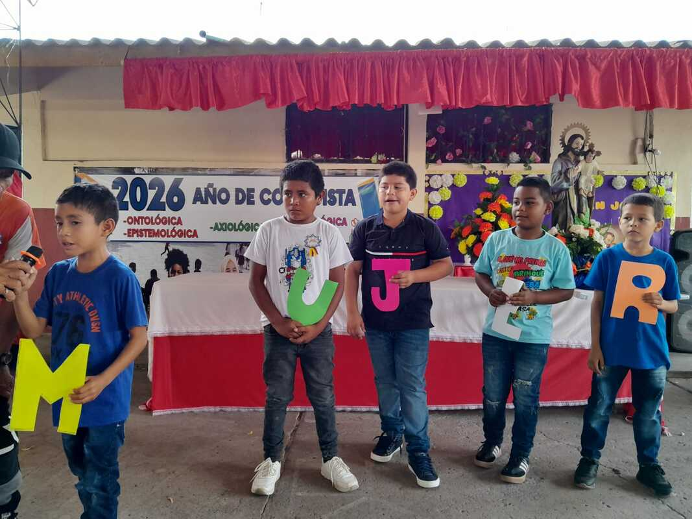
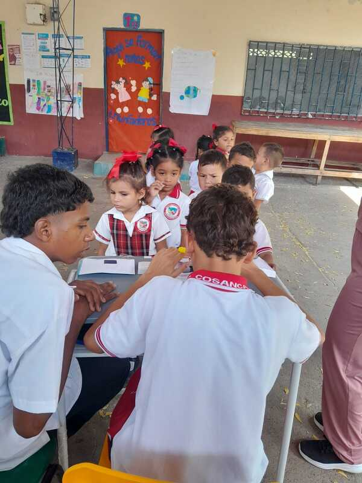

ACTIVIDAD ESCOLAR
CARNAVAL 2026
Celebración de la riqueza cultural, la alegría y el trabajo en equipo de nuestra comunidad educativa.
VER ACTIVIDADES →ESPACIO PEDAGÓGICO
Experiencias pedagógicas, proyectos y actividades que fortalecen la formación integral de nuestros estudiantes.
BIENVENIDOS
En este blog podrás conocer las diferentes actividades pedagógicas y proyectos realizados por Malvis Algarín, docente de la Institución Educativa N.º 3 San José.
Este espacio reúne evidencias, experiencias y reflexiones que reflejan el compromiso con la formación integral de los estudiantes y el fortalecimiento de los valores institucionales.
EXPERIENCIAS
ACTIVIDAD ESCOLAR
Celebración de la riqueza cultural, la alegría y el trabajo en equipo de nuestra comunidad educativa.
VER ACTIVIDADES →
CONMEMORACIÓN
Actividad orientada al reconocimiento, respeto y valoración de la mujer.
VER ACTIVIDADES →
PROYECTO DE DEMOCRACIA
Participación de los estudiantes en las actividades democráticas de la institución.
VER ACTIVIDADES →Educar es dejar una huella en la vida de cada estudiante.